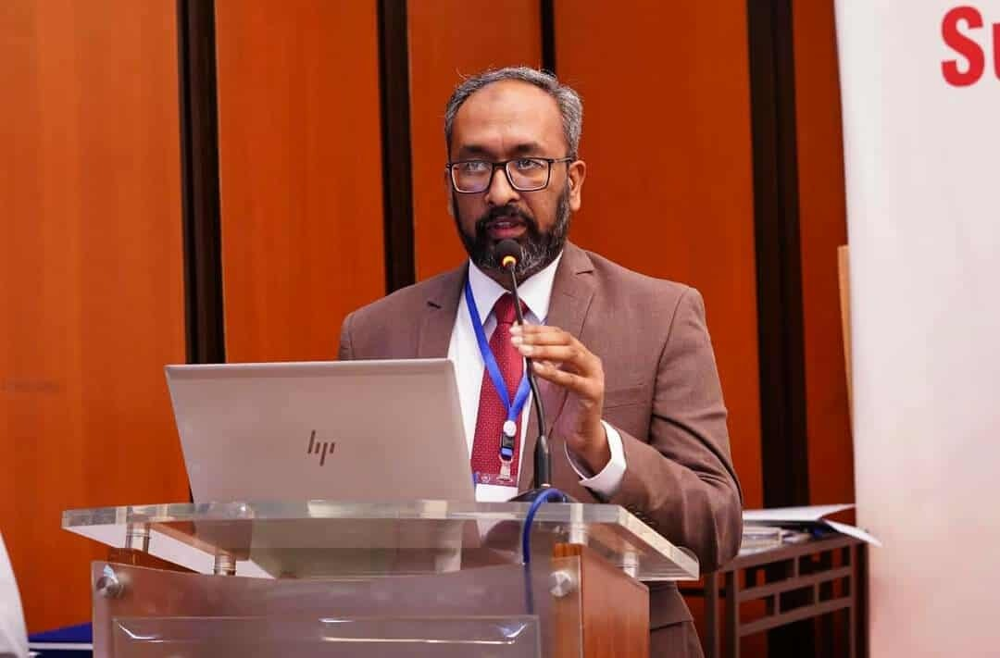

Regional Director (South Asia) INI | Associate Professor UAF
Dr. Aziz serves as the Regional Director for South Asia at the International Nitrogen Initiative (INI) and holds the position of Associate Professor of Soil Science at the University of Agriculture, Faisalabad (UAF), Pakistan. He is the lead partner from Pakistan in the global project "South Asia Nitrogen Hub" and is also involved in the UNEP/GEF funded project “International Nitrogen Management Systems (INMS)”. As a lead Editor, he has published “Nitrogen Assessment: Pakistan as a case study”.
Dr. Aziz has published more than 120 research articles, and produced >40 M.Sc. and 5 Ph.D students in the discipline of Soil Science. His research interests are i) improving fertilizer use efficiency, ii) nutrient recycling, iii) nutrient pollution.
Dr Aziz also served for about 7 years as Principal of UAF Sub-Campus Depalpur, Okara, and Project Director of two development projects worth Rs. 1300 million.
Download Full CV (PDF)| Position | Organization | Period |
|---|---|---|
| Principal, Sub-Campus Depalpur | University of Agriculture, Faisalabad | 2018 - 2023 |
| Project Director (HEC) | UAF (Development Project) | 2021 - 2022 |
| Associate Professor | University of Agriculture, Faisalabad | 2013 - Date |
| Adjunct Senior Lecturer | University of Western Australia | 2014 - Date |
Email: draziz@uaf.edu.pk
ORCID: 0000-0002-4300-3813
LinkedIn: Dr. Tariq Aziz Profile
Institutional: UAF Faculty Profile